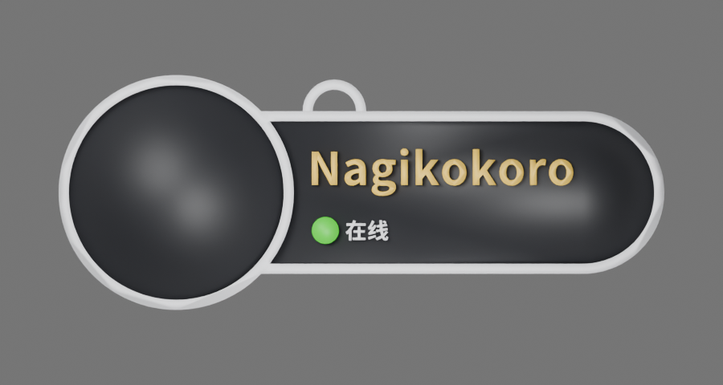
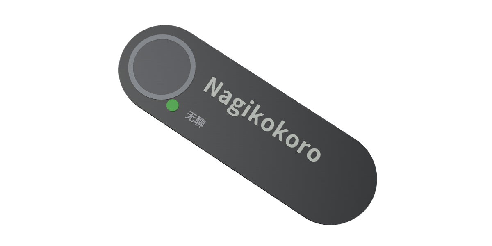
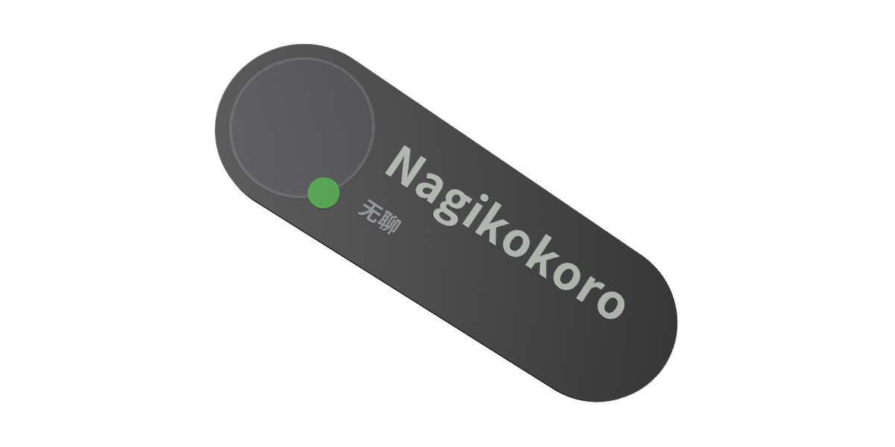

Classic · 经典胶囊圆润胶囊 · 小头像与厚边框120 × 38 × 4 mm · 头像直径 24 mm · 框厚 2 mm默认正面透视：厚度与浮雕Friend + They/Them，状态文字仍为无聊
Native · VRChat 拟原生头像圆融入轮廓 · 近黑正面与薄浮雕118 × 40 × 3.6 mm · 头像直径 32 mm · 框厚 0.7 mm默认正面透视：厚度与浮雕Friend + They/Them，状态文字仍为无聊